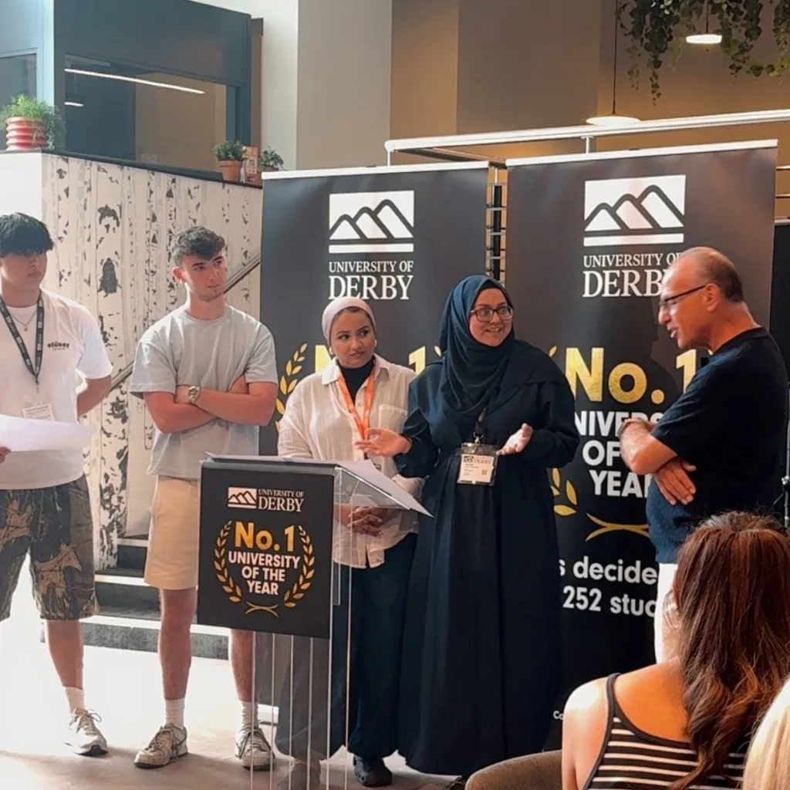
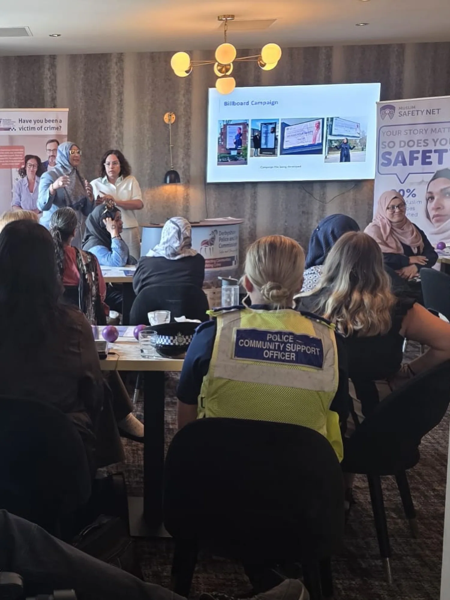

Book Sofia to speak where understanding needs to shift.
Sofia Iqbal speaks to schools, universities, organisations, community audiences and events on emotional capacity, neurodiversity, ADHD, self-understanding, entrepreneurship and lived experience.
The aim is not simply to deliver information. It is to help people leave seeing themselves, their pupils, their teams or their communities differently.

University / event speakingTalks that connect understanding with action.
Sessions can be adapted to the audience, context and desired outcome rather than delivered as a generic off-the-shelf talk.
Emotional Capacity
Why emotions are not the problem, what happens when capacity is exceeded, and how understanding changes the response.
ADHD & Neurodiversity
Moving beyond stereotypes and behaviour to understand presentation, regulation, identity and what support can look like in real life.
Understanding Before Change
Why insight, self-awareness and the right questions often need to come before sustainable change.
Entrepreneurship & Reinvention
Science, entrepreneurship, building brands, changing direction and creating solutions from lived problems.
Confidence, Identity & Self-Advocacy
How people build language around who they are, what they need and how they want to show up.
Custom Sessions
Have a theme or audience in mind? Sofia can shape a session around the transformation you want the room to experience.
Not just “what did they learn?”
What changed for them?
Before agreeing a speaking engagement, we want to understand what matters to your audience. That means asking what you want people to think, feel or do differently afterwards.
This helps shape the tone, examples, depth and format around the people actually in the room.
Audience first
School staff, pupils, university students, community audiences and professional teams need different language and examples.
Clear intended impact
We agree the intended shift before the session, rather than simply selecting a topic title.
Flexible format
Talk, keynote-style session, workshop, panel contribution or a combination depending on the event.
Professional and human
Grounded in evidence-informed learning, real-world delivery and lived experience.
Scientist turned entrepreneur, creating solutions for life, confidence and wellbeing.
Sofia’s work brings together a scientific way of thinking, entrepreneurship, psychology-informed learning, emotional change work, neurodiversity awareness and lived experience.
Her speaking is designed to make complex ideas feel understandable, relevant and usable — without reducing people to labels or presenting one-size-fits-all answers.
Schools, universities, organisations and community spaces.

Community / professional eventWant Sofia in the room?
Tell us about your audience, the date, format, what you want the session to achieve and the speaker budget available. We’ll use that to shape the right conversation.